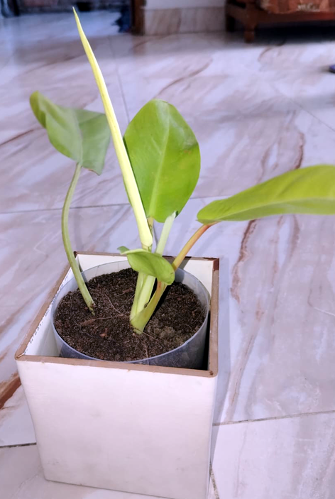

ফিলোডেনড্রন লেমন লাইম উজ্জ্বল লেমন-হলুদ রঙের হৃদপিণ্ডাকৃতির পাতার জন্য পরিচিত একটি জনপ্রিয় ইনডোর প্ল্যান্ট। এটি উজ্জ্বল, পরোক্ষ আলো এবং মাঝারি আর্দ্রতা পছন্দ করে। মাটি শুকালে পানি দিন এবং নিয়মিত ছাঁটাই করলে এটি ঝাকড়া ও সুন্দর থাকে।
পরিচর্যার বিস্তারিত নির্দেশাবলী:
আলো: উজ্জ্বল, পরোক্ষ আলো দিন। সরাসরি সূর্যালোক পাতা ঝলসে দিতে পারে এবং বিবর্ণ করে তুলতে পারে।
পানি দেওয়া: মাটি সবসময় আর্দ্র রাখুন, কিন্তু কাদাকাদা করবেন না। মাটির উপরের এক ইঞ্চি শুকিয়ে গেলে জল দিন, সাধারণত প্রতি ৪–৬ দিন অন্তর।
আর্দ্রতা: উচ্চ আর্দ্রতা অত্যন্ত গুরুত্বপূর্ণ; প্রয়োজন হলে জলীয় বাষ্প ছিটিয়ে দিন।
তাপমাত্রা: উষ্ণ তাপমাত্রা বজায় রাখুন এবং ঠান্ডা বাতাসের ঝাপটা থেকে দূরে রাখুন।
মাটি: বায়ু চলাচলযোগ্য পটিং মিক্স ব্যবহার করুন, যেমন পিট মস বা কোকো পিটযুক্ত মিশ্রণ।
সার: বৃদ্ধির মরসুমে (বসন্ত ও গ্রীষ্মকালে) মাসে একবার সুষম ও পাতলা তরল সার প্রয়োগ করা যেতে পারে।
ছাঁটাই: ঘন ঝাকড়া করার জন্য নিয়মিত লতানো অংশ ছাঁটাই করুন।
Philodendron Lemon Lime is a popular indoor plant known for its bright lemon-yellow heart-shaped leaves. It likes bright, indirect light and moderate humidity. Water when the soil is dry and prune regularly to keep it bushy and beautiful.
Detailed Care Instructions:
Light: Provide bright, indirect light. Direct sunlight can scorch the leaves and cause them to discolor.
Watering: Keep the soil moist at all times, but not soggy. Water when the top inch of soil is dry, usually every 4–6 days.
Humidity: High humidity is very important; mist as needed.
Temperature: Maintain warm temperatures and keep away from cold drafts.
Soil: Use an airy potting mix, such as a mix containing peat moss or coco peat.
Fertilizer: A balanced, diluted liquid fertilizer can be applied once a month during the growing season (spring and summer).
Pruning: Prune creeping parts regularly to create a dense clump.